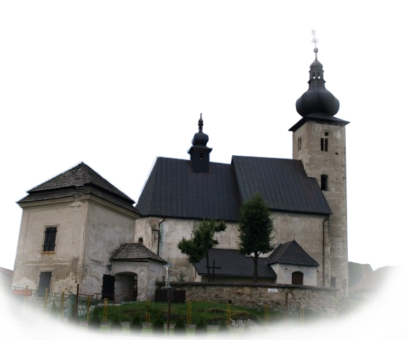

Dní
Hodín
Minút
Sekúnd
Obrad
Rímsko-katolícky kostol sv. Jána Krstiteľa

Kostol bol postavený koncom 13. storočia na ploche pôvodnej kaplnky
na počesť víťazstva nad Tatármi. Ozdobou kostola je gotický oltár
s hlavnou sochou madony z roku 1740 a dvestoročný pôvodný organ,
ktorý pochádza od Martinusa Zorkovského z Kremnice. Raritou
kostola je starobylý zvon z roku 1576 umiestnený v
malej vežičke.
Fraňa Kráľa 148
032 03 Liptovský Ján
Slovensko
mapa